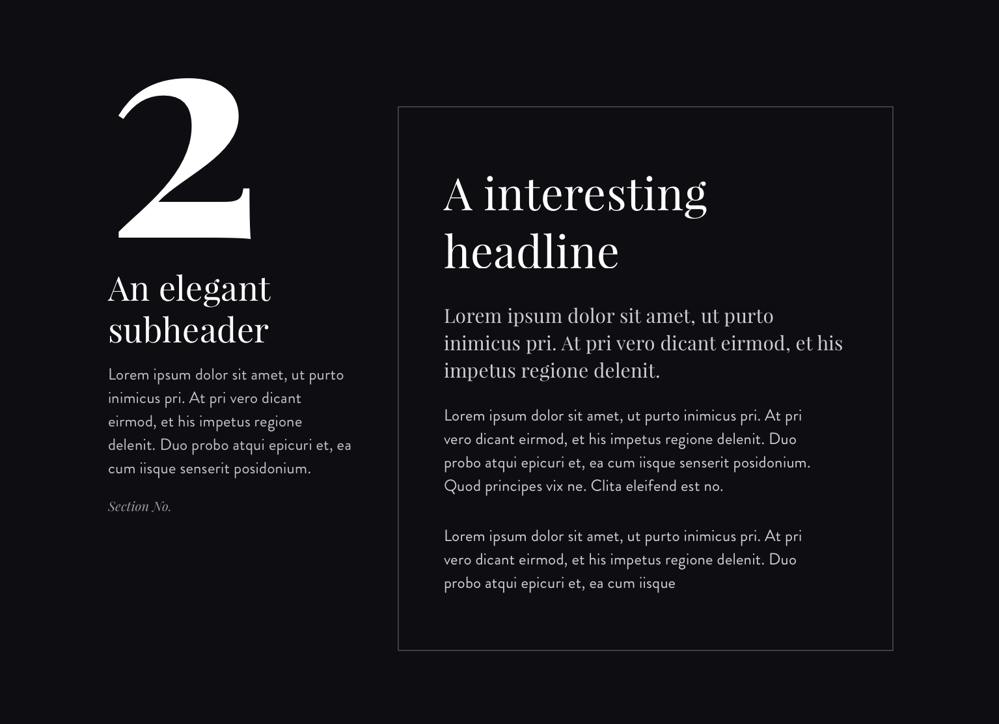
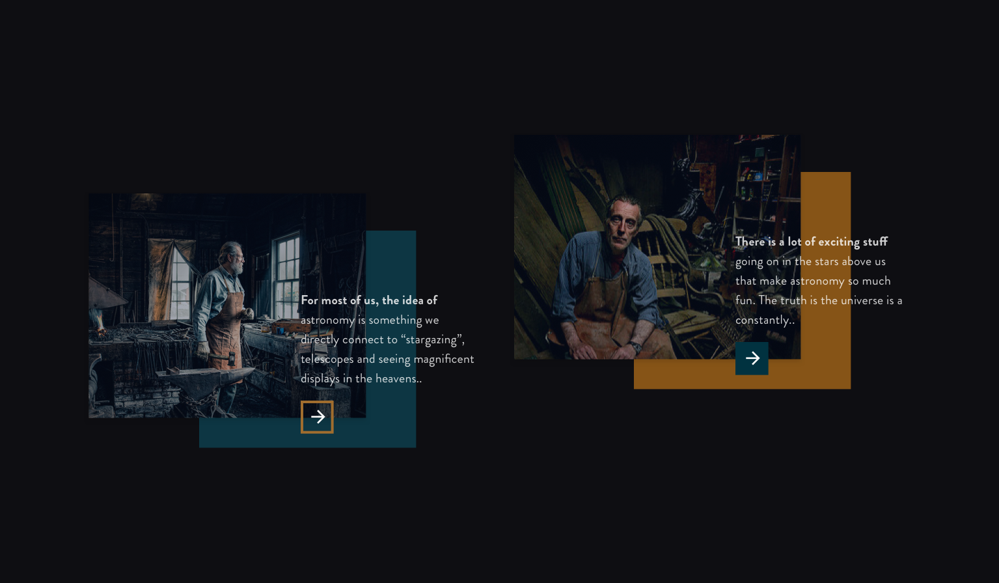

De opdracht
De opdrachtgever had aangegeven dat ze tijdens haar jeugd in IJmuiden heeft gewoond, maar ze heeft het nooit een leuke stad gevonden. Toch woont ze sinds kort weer in IJmuiden en heeft de stad nu echt leren kennen. Het is een stad van harde werkers, vissers en industriële fabrieken. Graag wil zij dit gevoel overbrengen aan de jeugd van IJmuiden.
Sfeer
De huisstijl moet er robuust en industrieel uit gaan zien. Ook moeten er visuele elementen van de zee in terugkomen. Tijdens de briefing werden er foto’s gepresenteerd van mensen in de ambacht. Deze foto’s hadden een rauwe en groffe sfeer. Ook waren het vaak donkere foto’s
Styleguide
Toen ik de sfeer had gedifinieerd, ging ik verder met de styleguide
Typografie
Klassiek, ouderwets. In combinatie met een wat speelser lettertype om contrast te creerern
01
Kleurgebruik
kleuren zee fabriek
02
Fotografie
donker net zoals de fotografie planken ouderwets
04
Van schets naar design
(1)schets (2) design interessants opvallend contrast met de kleuren uitspringen


Snel delen
Het was belangrijk om de artikelen snel en gemakkelijk te kunnen delen. Dat heb ik proberen op te lossen door een “select to share” feature te implementeren. Als je een je text selecteert dan komen er meerdere social media icoontjes boven te staan waarmee de quote en pagina kan delen.